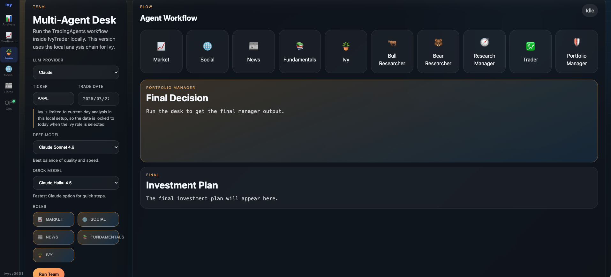
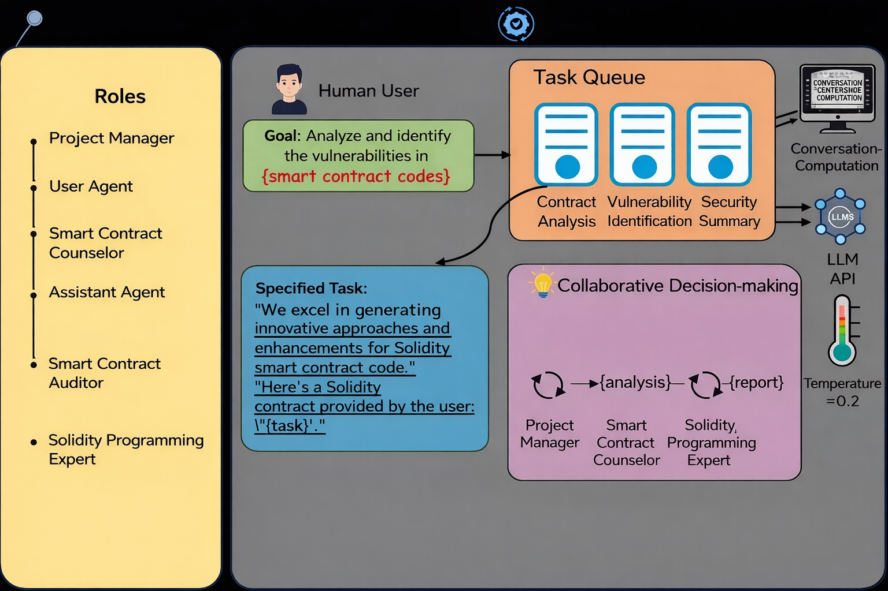
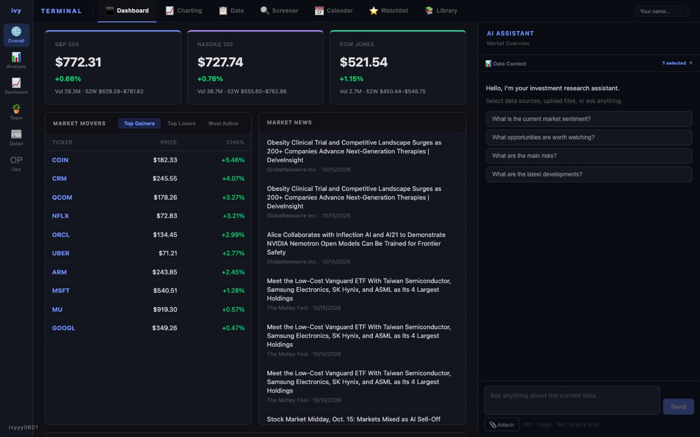
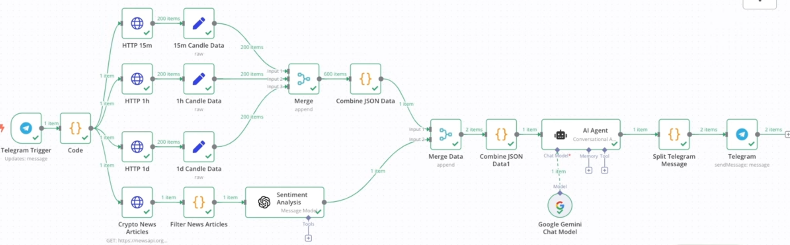

Jiexin (Ivy) Chen
Backend · LLM Agents · Quant Systems
M.A. in Statistics (Advanced ML) at Columbia University. I build systems where engineering meets data, from trading backends and multi-agent LLM tools to market research platforms.
Experience
Software Engineer Intern · Bybit
Backend team for the P2P trading platform. Java, gRPC, Kafka, Redis, MySQL.
AI Engineer Intern · Antalpha
Multi-agent systems and harness engineering for AI employees.
Quantitative Systems Engineer Intern · RAYS Capital Partners
AI-driven multi-agent stock research platform, market dashboards and alternative data.
Research Assistant · Columbia University Irving Medical Center
ICU data pipelines on the MIMIC database with BigQuery.
Data Science Intern · StudyCo
ETL, user analytics and A/B testing for social growth.
Data Analytics Engineer Intern · Wisers Information
Big-data warehouse and ETL with Hadoop, Spark, Hive and SQL.
Research Intern · Guosen Securities
Projects

Multi-Agent Stock Research Platform ↗
News sentiment forecasting and a multi-agent investment desk where analyst, bull/bear and PM agents debate.
Multi-Agent Backend Code Generation ↗
Turns natural-language specs into tested REST services. Model routing cut cost 75%.

LLM Smart Contract Audit ↗
AST + LLM pipeline for Solidity vulnerability detection, with reports stored on IPFS.

Bloomberg-style Market Terminal ↗
Screener, fundamentals, earnings calendar and news-annotated charts with an AI sidebar.

n8n Crypto Automation ↗
A collection of LLM-powered automation workflows for crypto research and alerts.

Kafka Stock Market Pipeline ↗
Real-time market data streaming into a queryable data lake on AWS.
Live demos


Education
Columbia University
M.A. in Statistics, Advanced Machine Learning Track
Hong Kong Baptist University
B.Sc. (Honours) in Computer Science · Top 4%
University of Oxford
Exchange in AI & Machine Learning